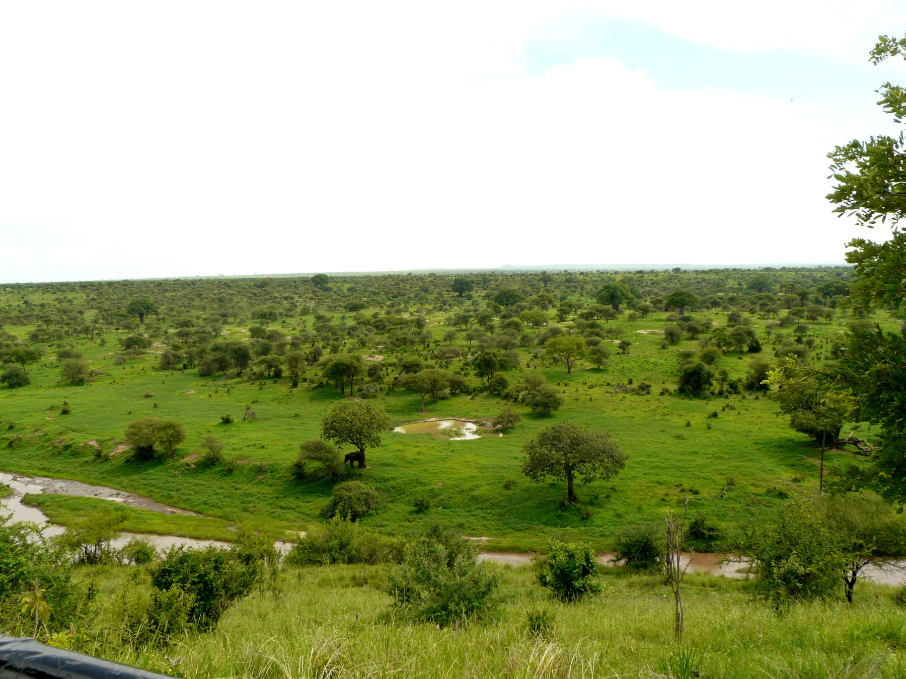
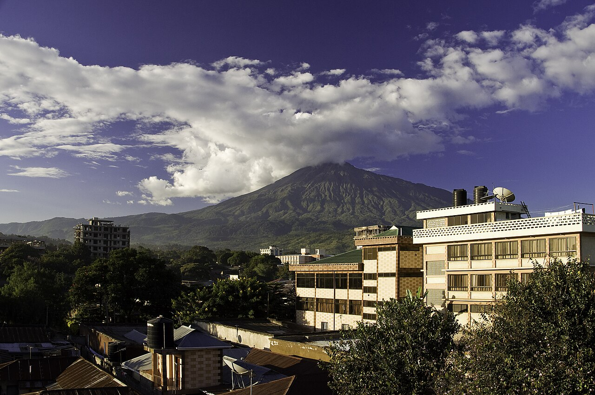
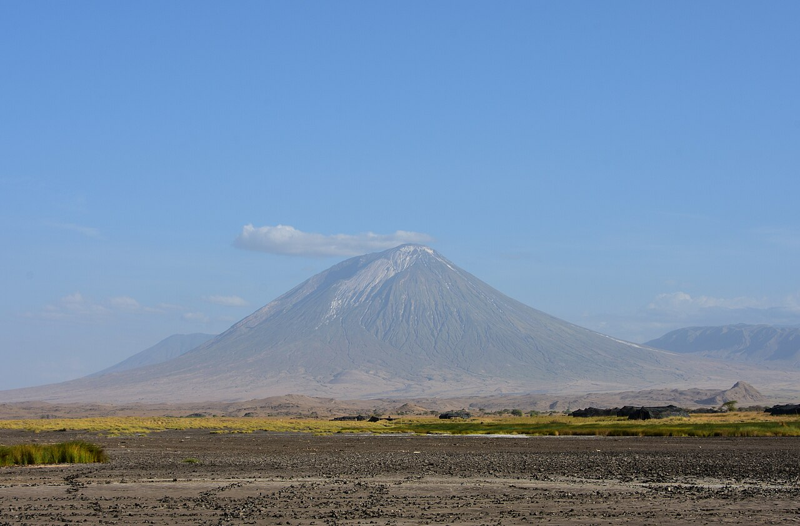

Serengeti
Open country and a landscape made for looking far. Build a wildlife journey around the season and the places that draw you in.
Explore safari ideas
Move from famous horizons to the smaller details: forest paths, market mornings, old streets and the changing light of the coast.
Explore the placesTanzania is our launch destination. These places are an introduction, not a fixed route or promise of availability.
Open country and a landscape made for looking far. Build a wildlife journey around the season and the places that draw you in.
Explore safari ideas
A different northern landscape to consider when shaping a safari route.
Find it in a journey
Mountain routes and highland scenery, approached at a pace that fits your plans.
Explore mountain ideas
Another mountain landscape to add to the conversation for an active journey.
Explore mountain ideas
Remote-feeling country, lake shore and volcanic forms in northern Tanzania.
Read a field note
Stone Town, island life and time by the water can bring another rhythm to a journey.
Explore coast ideas
Historic streets, carved doors, markets and the connections carried by a coastal city.
Read a field note
Forest paths and falls offer another way to experience the country beyond safari landscapes.
Explore experience ideasThese are experience ideas to discuss. The final plan depends on your interests and the details confirmed for your trip.
Spend time in Tanzania’s safari landscapes and focus on what you hope to observe.
Explore the high country through a trekking or walking idea suited to your plans.
Make room for markets, local flavours, museums and the histories held by each place.
Look beyond the headline destinations to the quieter details of the terrain.
Consider a slower stretch on the Swahili coast or Zanzibar as part of your trip.
Tell us the places or experiences you want to explore, and ask for a custom Tanzania journey quote.